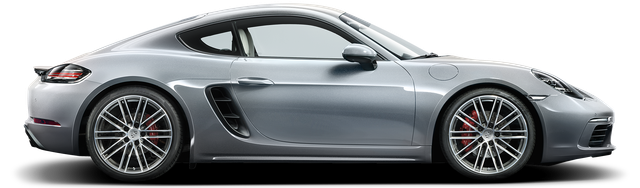
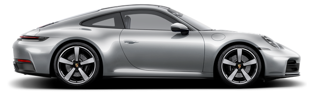
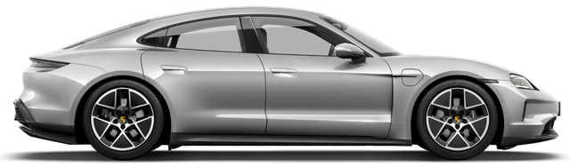

Reconocible desde lejos, de día o de noche: el típico diseño de cuatro puntos Porsche de los faros Matrix LED controlados por cámara y los faros HD Matrix LED de serie en los modelos Turbo.
- Porsche Cayenne, excelente opcion, tu mejor decicion, se tú, se un porsche!!!
- Porsche Macan, se trata ser ser influencia no solo influenciar.
- Porsche Taycan, elegancia sin limite.
|  | El Cayenne es un auto de lujo de tamaño medio que se lanzó en 2002. Es el primer SUV de Porsche y se ha convertido en uno de los modelos más populares de la marca. El Cayenne es un vehículo de alto rendimiento que ofrece una excelente combinación de rendimiento, comodidad y lujo. El Cayenne está disponible en varias versiones, incluidas el Cayenne, el Cayenne S, el Cayenne GTS, el Cayenne Turbo y el Cayenne Turbo S. El Cayenne es un vehículo de alto rendimiento que ofrece una excelente combinación de rendimiento, comodidad y lujo. El Cayenne está disponible en varias versiones, incluidas el Cayenne, el Cayenne S, el Cayenne GTS, el Cayenne Turbo y el Cayenne Turbo S. |
El Macan es un auto compacto de lujo que se lanzó en 2014. Es el segundo SUV de Porsche y se ha convertido en uno de los modelos más populares de la marca. El Macan es un vehículo de alto rendimiento que ofrece una excelente combinación de rendimiento, comodidad y lujo. El Macan está disponible en varias versiones, incluidas el Macan, el Macan S, el Macan GTS, el Macan Turbo y el Macan Turbo S. El Macan es un vehículo de alto rendimiento que ofrece una excelente combinación de rendimiento, comodidad y lujo. El Macan está disponible en varias versiones, incluidas el Macan, el Macan S, el Macan GTS, el Macan Turbo y el Macan Turbo S. |
 |
|  | El Taycan es un sedán deportivo eléctrico de lujo que se lanzó en 2019. Es el primer vehículo eléctrico de Porsche y se ha convertido en uno de los modelos más populares de la marca. El Taycan es un vehículo de alto rendimiento que ofrece una excelente combinación de rendimiento, comodidad y lujo. El Taycan está disponible en varias versiones, incluidas el Taycan, el Taycan S, el Taycan GTS, el Taycan Turbo y el Taycan Turbo S. El Taycan es un vehículo de alto rendimiento que ofrece una excelente combinación de rendimiento, comodidad y lujo. El Taycan está disponible en varias versiones, incluidas el Taycan, el Taycan S, el Taycan GTS, el Taycan Turbo y el Taycan Turbo S. |
Para ver más sobre estos modelos, puedes visitar el sitio web dando click en la siguente imagen 👇